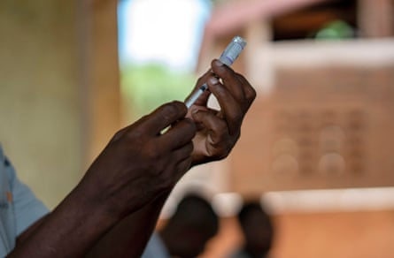

F or the hundreds of children who arrive every day at hospitals in parts of Africa unconscious and unresponsive, their survival chances have remained unchanged for nearly 50 years. But new research is raising hopes that swift treatment with antibiotics could improve those chances.
Despite huge strides in healthcare and vaccination rates for children in sub Saharan Africa, the odds remain stacked against those who become so ill they fall into a coma. Depending on the cause, between 17% and 45% are expected to die. Many more will be left with disabilities.
“It can become depressing,” says Dr Alice Muiruri-Liomba, who works in Blantyre, Malawi.
Researchers have discovered that giving antibiotics as soon as a child arrives at hospital could save tens of thousands of lives a year – and getting them to specialist care quickly could also reduce deaths and long-term disability.
Analysis based on multiple studies and published in the Lancet Global Health shows that most of the children who go into a coma have a severe complication of malaria, called cerebral malaria. The second most common identified cause is bacterial meningitis.
A second study by the same team , focusing on Queen Elizabeth hospital in Blantyre, found that one in four children hospitalised in a coma with malaria had an additional bacterial infection.
“Too often, malaria parasites found in the blood of a sick African child stop medical staff looking for and treating additional bacterial infections,” says Dr Stephen Ray of the Oxford Vaccine Group, the study’s principal investigator.
“You treat the malarial parasites as the cause of the coma, and then actually that becomes a risk factor for dying from a bacterial underlying infection that has been untreated … we need to just make sure everyone that comes in with febrile coma gets antibiotics, as well as antimalarials.”
Making that standard practice could change how 2.3 million children a year in Africa are treated and save more than 20,000 lives, Ray says.
Data is patchy, but studies and doctors’ observations suggest non-traumatic coma is much more common among children in sub-Saharan Africa, and parts of Asia, than it is in the global north.
“A child comes in, unfortunately, quite a lot later down the line than they would in a UK setting,” says Ray. That can mean “at up to a day, or over a day, of full, deep coma. Completely unconscious, unable to communicate, completely disoriented, with a very high fever.”
Those symptoms would prompt a UK ambulance “within minutes”. In Malawi, it can take days.
“That delay is catastrophic – we showed with brain scans, by the time they get to you, they’ve actually got quite a lot of neurological complications: brain swelling, brain injury,” says Ray.
Muiruri-Liomba says transport is a major barrier for many families.
“We have cases where you have a mother carrying a convulsing child on her back the whole night, walking to a health facility. Then they get there, and in this health facility you don’t have ambulances … so these mothers are forced to go and source their own transport to a bigger hospital.”
Muiruri-Liomba treats children at Queen Elizabeth central hospital – which is relatively well resourced, boasting the country’s only portable MRI scanner and fully working research laboratories.
District hospitals can be poorly equipped with medicines in short supply and laboratory facilities basic.
A health worker prepares a malaria vaccine as part of a pilot programme in Tomali village, Malawi, December 2019.Photograph: Jérôme Delay/AP
Children will usually have been first treated at home, then at a clinic and a district hospital before they finally reach Queen Elizabeth, Muiruri-Liomba says. “We only take patients to the hospital once they complicate – and what that tells me is that they don’t understand the danger of what malaria is capable of doing, or what a febrile illness leading to seizures and coma is capable of doing.”
Muiruri-Liomba wants to raise awareness of the consequences of delaying care – both in the community and among health professionals and policymakers.
“Those children who present late are likely to have a bad outcome,” she stresses, which could be death or brain damage, probably caused by seizures that have not been managed at an earlier stage.
Dr Tarun Dua, who leads the Brain Health Unit at the World Health Organization (WHO), agrees that “systemic challenges or barriers that we see in access to care and delivery” is a key driver of the problem.
“In many of the countries in Africa, there is only one child neurologist per 4 million population,” she says. “If you think about where neuroimaging is available, it is in the capital or a couple of cities. There is a big rural/urban divide.”
WHO guidelines on meningitis care , updated in April, say children who may have acute meningitis “need to start empiric antibiotics” even before any diagnostic test. This will, says Dua, include any child presenting at hospital in a coma.
“Our task is, how do we get countries to implement those guidelines?”
The WHO is encouraging countries to update their guidance. And Dua is hopeful of technological advances. Low-cost brain scans and better bedside tests are in development.
“Things are moving,” she says. “But I think accelerated action is important.”